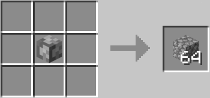

Гігантський кругляк
Гігантський кругляк виглядає просто як великий кругляк. Нічого особливого. Має розмір 64 звичайних блоків у формі 4x4x4. Його можна зламати будь-яким інструментом, але це займе в 64 рази більше часу ніж ламання одного звичайного блоку. Гігантське кайло своєю чергою руйнує гігантський кругляк зі звичайною швидкістю. З допомогою гігантського кругляку можна створити гігантські інструменти або скрафтити 64 звичайного кругляку.
- Прозорість: ні
- Світіння: ні
- Міцність: 128
- Вибухостійкість: 15
- ID: twilightforest:giant_cobblestone
- Інструмент: гігантське кайло
- Поновлюваний: ні
- Складається: так (64)
- Займистий: ні

Майстрування
